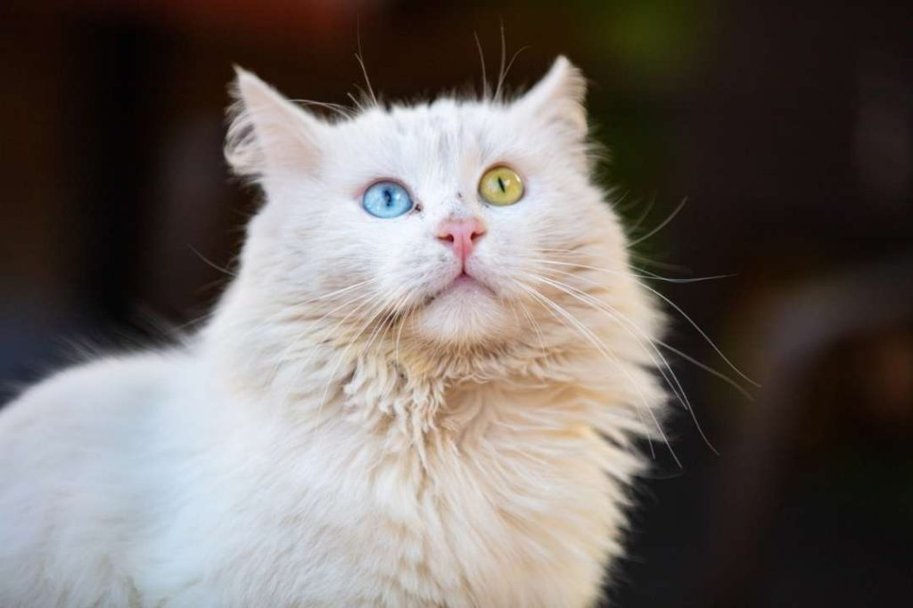
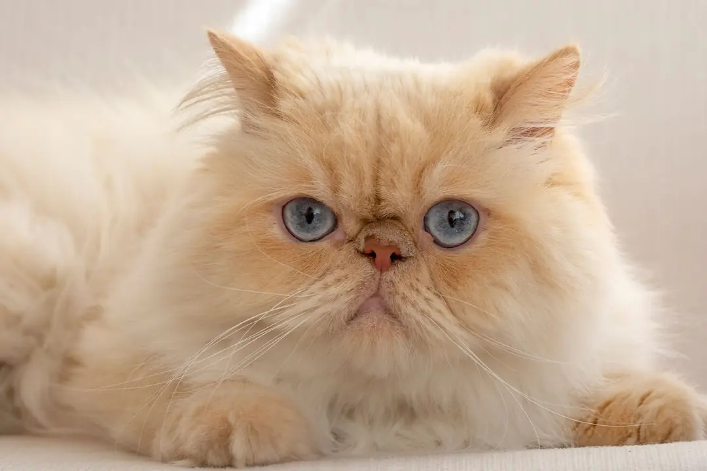
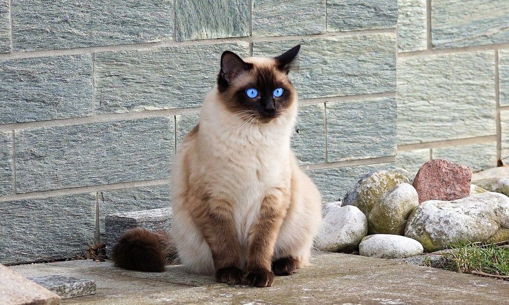
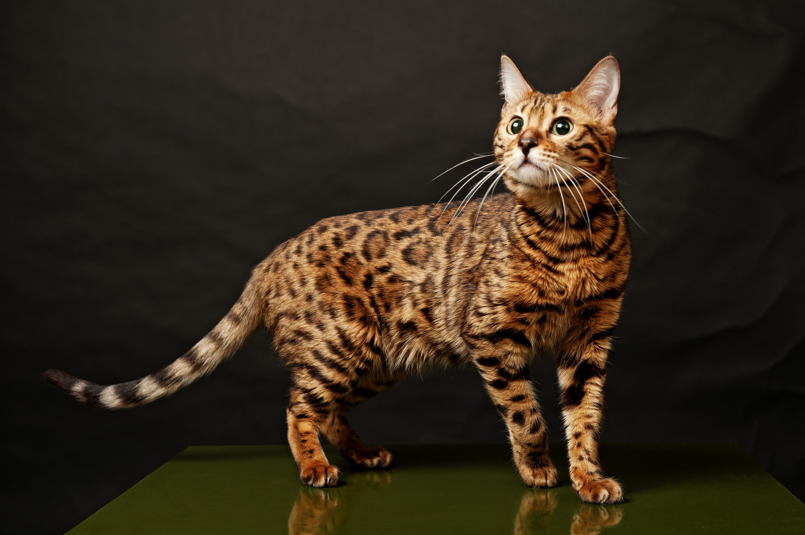
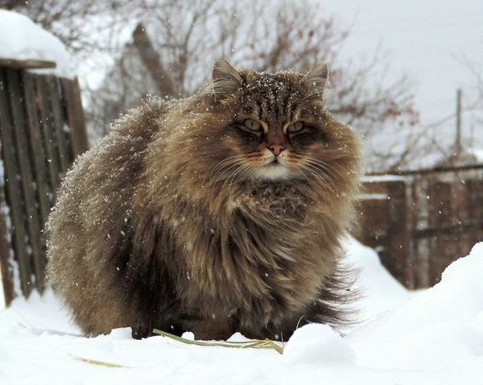

Günümüzde çoğu aile, evinde küçük tüy yumaklarının bakımını üstlenmektedir. Tabii ki hiç kimse, küçük dostundan sağlık sorunları nedeni ile erken ayrılmak istemez. Bu nedenle en sağlıklı cins kedilere yönelim artmaktadır.
Bazı kedi türleri, genetik olarak daha sağlıklı ve dinç olabilir. En sağlıklı kedi ırkları şunlardır;

Suyu sevmesi ile de bilinen Van kedileri, dayanıklılığı ile de en sağlıklı kedi cinslerinden biridir. Genetik rahatsızlıklara çok fazla yatkınlığı bulunmaz. Beyaz pamuk gibi tüyleri ve farklı renge sahip gözleri ile çok dikkat çeker.
Başa Dön
Bu kedi cinsi, oldukça eski bir ırktır. İnsanlar tarafından çok sevilen bu kedi ırkı, orta büyüklükte ve dayanıklı yapıdadırlar. Uzun ve yumuşak tüylere sahiptirler. Bu kedi ırkı, insanlar ile iletişim kurmayı seven ve sevecen yapıları ile bilinmektedirler. Oyun oynamaktan büyük zevk alırlar. Düzenli bakım olanakları sunulduğunda uzun ömürleri ile size eşlik ederler. Bu durum da en sağlıklı kedi cinsleri arasında olmasına olanak sağlar.
Başa Dön
Siyam kedileri, görüntüleri ile dikkat çekerler. Genetik olarak sağlıklı bir yapıya sahiptirler. Bu durumda onların en sağlıklı kedi cinslerinden biri olmasına olanak sağlar. Bazı rahatsızlıklara genetik yatkınlığı mevcuttur. Sahiplendiğiniz yetiştirici seçimine önem vermeniz bu nedenle önemlidir.
Başa Dön
Bu kedi türü, vahşi görünümü ve enerjik yapısı ile bilinir. Genetik rahatsızlığı çok fazla bulunmamaktadır. Bu durumda en sağlıklı kedi cinslerinden biri olarak değerlendirilir. Bu kedilerin sindirim sistemi ile alakalı rahatsızlığa yatkınlığı olsa da uygun bir diyet planlaması ile bu sorun aşılabilir.
Başa Dön
Sibirya kedileri, adını aldığı Sibirya soğuklarındaki iklim şartlarına uyumluluğu ile bilinirler. Kalın ve su geçirmez kürkleri sayesinde dayanıklıdırlar. Genetik sağlık sorunlarına yatkınlığı azdır. Bu durum onların en sağlıklı kedi cinsleri olarak bilinmesini sağlıyor. Görüntü olarak dikkat çekici güzelliğe sahip olan bu kedi ırkı, hayvanseverlerin dikkatini çekmektedir.
Başa Dön